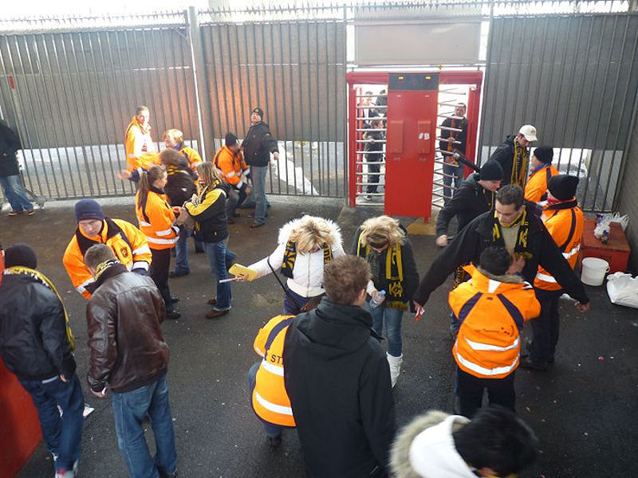
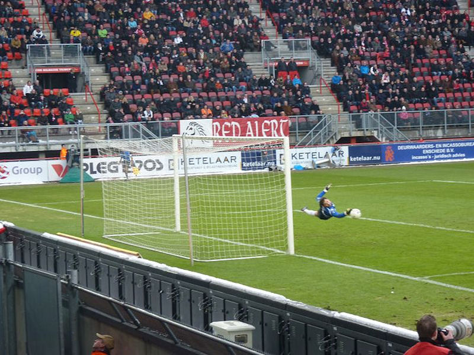
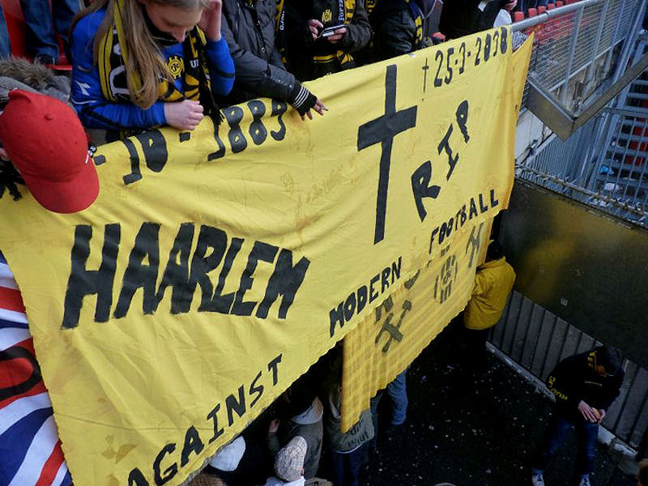
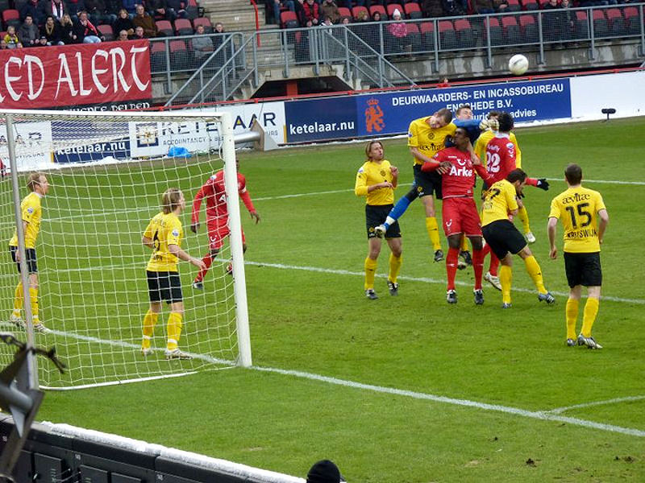
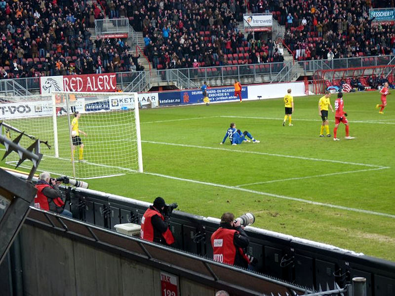
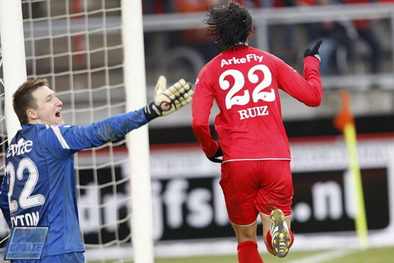
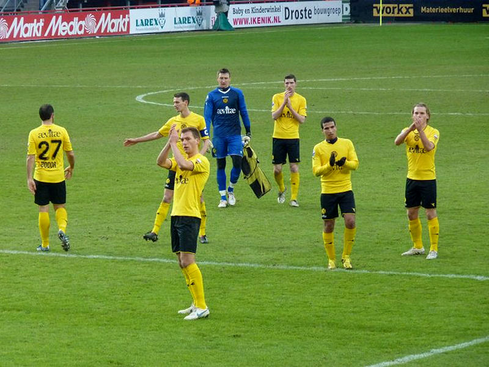

|
FC Twente - Roda
JC (2-0) 31 januari 2010 |

Het fouilleren voor de Grolsch-krat.

Tyton verrichte knappe reddingen. Zijn collega Bosschker eveneens.

De Roda-supporters reageren op het failliet van FC Haarlem.

Tyton!

Nadat de wedstrijd lang gelijk op is gegaan en beide teams vele kansen hebben
verprutst, scoort Perez 1-0, (70').

Twee minuten later beslist Ruiz de wedstrijd die een voorzet van Stoch
binnen schiet: 2-0, (72').

Komende woensdag al wacht de volgende zware uitwedstrijd. Ajax is de
tegenstander.
Foto's: Theo Sprenger en FC Update
Roda JC maakte het FC Twente knap lastig. Twee oplevingen in een tijdsbestek
van drie minuten brachten de Tukkers de 2-0 zege.
FC Twente kwam moeizaam uit de winterstop en maakte ook tegen Roda JC geen
goede indruk. Opvallend was dit keer ook de defensieve kwetsbaarheid van de
thuisploeg. Een gebeurtenis kort voor rust was tekenend. Roda JC schoot de
bal op goed geluk naar voren en Junker kon pardoes vrij opstomen naar
doelman Boschker. De aanvaller vond hem op zijn weg, zoals meer Limburgse
pogingen strandden op Boschker. Een vrije trap van Hadouir verdween via zijn
hand naast, terwijl Ruud Vormer in een een-op-een-duel zijn meerdere moest
erkennen in de doelman.
Boschker hield zijn ploeg op de been. FC Twente, dat slechts sporadisch
gevaar stichtte, trok halverwege de tweede helft de wedstrijd naar zich toe.
Perez, die met een vrije trap al dicht bij een goal was, zette met een
individuele actie de Roda-defensie op het verkeerde been.
Net bekomen van de tegenvaller incasseerde Roda JC twee minuten later de
genadeklap. Ruiz werkte een voorzet van Stoch in het Limburgse doel en
verzekerde FC Twente daarmee van de drie punten.